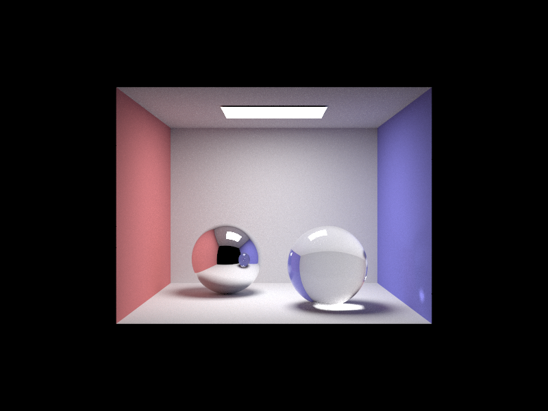
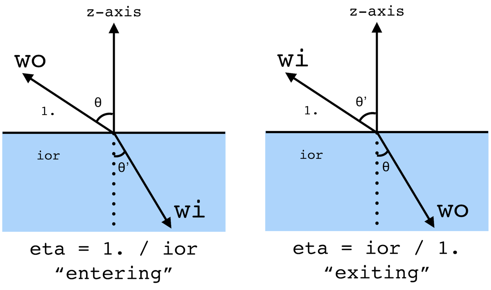
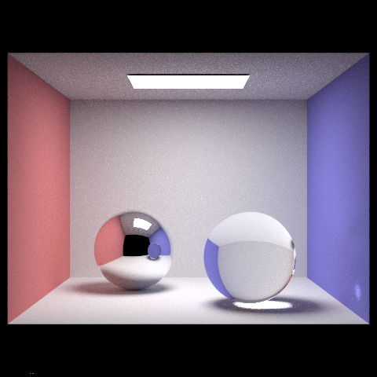

This image took about two minutes seconds to render. It has 256 samples/pixel, 4 samples/light, and max ray depth equal to 7.
Introduction
In this part, you're going to implement mirror and glass models with both reflection and refraction.
After completing this part, make sure you can render
- CBdragon.dae (mirror only)
- CBlucy.dae (glass only)
- CBspheres.dae (mirror and glass)
Task 0: Refactoring assignment 6 Code
To ensure that we handle emitted light in the scene correctly with delta bsdf's we will need to modify the at_least_one_bounce_radiance function.
If the current intersection is a delta bsdf, we do not want to include the radiance from direct lighting as it will not be reflected along the view vector.
Instead, we take the emission from the next intersection (using a call to zero_bounce_radiance) and add it to our incoming radiance from our recursive call. The sum of these two values then is our incoming radiance which we scale with the bsdf and Lambert's Cosine Law as before.
We also make the assumption that both incident and outgoing vectors at our intersection point away from the point of interest.
If you're using your code from assignment 6, change at_least_one_bounce_radiance to only include one_bounce_radiance if the current intersection doesnt have a delta bsdf.
if (!isect.bsdf->is_delta())
L_out += one_bounce_radiance(r, isect);
Additionally, if the current intersection has a delta bsdf, add the zero_bounce_radiance of the new shadow ray/intersection to the recursive one_bounce_radiance, before scaling both the same way as before.
Vector3D L = at_least_one_bounce_radiance(rec, new_isect);
if (isect.bsdf->is_delta())
L += zero_bounce_radiance(rec, new_isect);
Finally, ensure you are using the absolute value of the cosine term (i.e. abs_cos_theta or fabs(w_in.z)), since we assume the vectors all point away from the intersection.
If you're using the staff library, these changes have already been made for you.
Task 1: Reflection
Implement the BSDF::reflect() function.
We recommend taking advantage of the object coordinate space that BSDF calculations occur in. This means that the origin is the intersection point and the axis lies along the normal vector. In this situation, reflection should be a one line transformation of the and coordinates.
Task 2: Mirror Material
Implement MirrorBSDF::sample_f() in advanced_bsdf.cpp. This should be straightforward if you rely on your BSDF::reflect() function. Remember that delta BSDFs like this one are a special case in PathTracer's lighting estimation routines, so you should set pdf equal to 1 in sample_f(). Note that you must actually return reflectance / abs_cos_theta(*wi) because we need to cancel out the cosine that the at_least_one_bounce_radiance function will multiply by. Perfect mirrors only change the ray direction, they don't cause any Lambertian falloff.
Note that the MirrorBSDF::f() implemented for you returns an empty Vector3D() since we assume that a wi direction that was not created using sample_f() has zero probability of being equal to the reflection of wo. (This is a convoluted way of ensuring that we never double count our radiance with delta BSDFs, since we have the special is_delta().)
Note: make sure you run with a maximum ray depth greater than 1, otherwise the spheres won't show up. Why is that the case?
Task 3: Refraction

To see pretty glass objects in your scenes, you'll first need to implement the helper function BSDF::refract() that takes a wo direction and returns the wi direction that results from refraction.
As in the reflection section, we can take advantage of the fact that our BSDF calculations always take place in a canonical "object coordinate frame" where the z axis points along the surface normal. This allows us to take advantage of the spherical coordinate Snell's equations. In other words, our wo vector starts out with coordinates:
Note: we put a sign on the coordinate because when wo starts out inside the object with index of refraction greater than 0, its coordinate will be negative. The surface normal always points out into air. When is positive, we say that we are entering the non-air material, else we are exiting. This is depicted in the figure.
For the transmitted ray, , so and . As seen in the figure, define to be the ratio of old index of refraction to new index of refraction. Then Snell's law states that . This implies that .
In the case where , we have total internal reflection--in this case you return false and the wi field is unused.
Be careful when implementing this in code, since you are only provided with a single ior value in the refract function: when entering, this is the new index of refraction of the material is pointing to, else it is the old index of refraction of the material that itself is inside. In other words, ior when entering and ior when exiting.
In spherical coordinates, our equations for and tell us that
where we are indicating that has the opposite sign of .
The next step is to implement RefractionBSDF::sample_f(). This function uses BSDF::refract to determine the incoming ray w_i. Note that BSDF::refract returns false when refraction does not happen due to Total Internal Reflection. In that case, you should return an empty Vector3D.
When refraction happens (i.e.BSDF::refract returns true), return transmittance / abs_cos_theta(*wi) / eta^2 (where eta^2 is the same as in the refraction function)
The eta^2 term in the case of refraction is necessary because radiance concentrates when a ray enters a high index of refraction material (low eta) and disperses when a ray exits such a material (high eta). The abs_cos_theta(*wi) terms are present to cancel out the cosine term in at_least_one_bounce_radiance, just like in the mirror BSDF case.
With this implemented, you should now be able to render scenes containing only reflecetive and refractive elements like CBspheres_refract.dae. The instructor references produces the following image:

Note how the front sphere is purely refractive, so we see it distort the light going through it. However, since this material refraction-only, we don't see glare like one would except in realistic glass.
For the next Task, we will combine reflection and refraction to create a glass material
Task 4: Glass Material
Now you can implement GlassBSDF::sample_f(). As with reflection, GlassBSDF::f() simply returns Vector3D().
For sampling the glass BSDF: when wo has a valid refracted wi (so total internal reflection does not occur), both reflection and refraction will occur at this point. To model this, we need to know the ratio of the reflection energy to the refraction energy. The Fresnel equations model the actual physics behind this phenomenon. However, we can simply use Schlick's approximation to decide the ratio in this assignment, since it is much easier to evaluate. Since sample_f() is only allowed to return one ray direction, we will use Schlick's approximation to give us a coin-flip probability of either reflecting or refracting. Thus, our sample_f() routine should look like the following:
- If there is total internal reflection
- assign the reflection of
woto*wi - set the
*pdfto 1 - return
reflectance / abs_cos_theta(*wi)
- assign the reflection of
- Else
- Compute Schlick's reflection coefficient
- If
coin_flip(R)- assign the reflection of
woto*wi - set the
*pdftoR - return
R * reflectance / abs_cos_theta(*wi)
- assign the reflection of
- Else
- assign the refraction of
woto*wi - set the
*pdfto1-R - return
(1-R) * transmittance / abs_cos_theta(*wi) / eta^2(whereeta^2is the same as in the refraction function)
- assign the refraction of
The eta^2 term in the case of refraction is necessary because radiance concentrates when a ray enters a high index of refraction material (low eta) and disperses when a ray exits such a material (high eta). The abs_cos_theta(*wi) terms are present to cancel out the cosine term in at_least_one_bounce_radiance, just like in the mirror BSDF case.